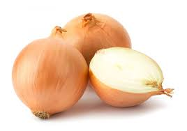

Les légumes
| FAMILLE | LEGUME |
|---|---|
| Les légumes fleurs | |
| Les légumes feuilles | |
| Les légumes fruits | |
| Les légumes à bulbe |  |
| Les légumes tubercules |

|
| Les légumes graines | |
| Les légumes racine | |
| Les légumes tige |